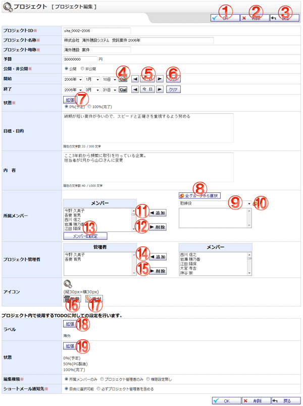

プロジェクトを編集する画面です。

機能説明
OKボタンプロジェクト編集確認画面へ遷移します。 |
削除ボタンプロジェクト削除確認画面へ遷移します。プロジェクトを削除します。 |
|---|---|
戻るボタン遷移元画面へ遷移します。 |
カレンダーボタンポップアップでカレンダー画面が開きます。カレンダー画面で日付をクリックすると、クリックした日付がセットされます。 |
前日・今日・翌日ボタン年・月・日コンボを切り替えます。 |
クリアボタン年・月・日コンボを未選択状態にします。 |
状態拡張ボタン状態設定画面へ遷移します。 |
全グループから選択ボタンポップアップで全グループから選択画面が開きます。 |
グループコンボ選択したグループに所属するユーザがユーザリストに表示されます （すでにメンバーリストに追加されているユーザは表示されません）。 |
グループボタンポップアップでグループ選択画面が開きます。 |
所属メンバー追加ボタンユーザリストで選択されているユーザを、メンバーリストに追加します。 |
所属メンバー削除ボタンメンバーリストで選択されているユーザを、メンバーリストから除外します。 |
メンバーID設定ボタンプロジェクトメンバーID設定画面へ遷移します。 |
プロジェクト管理者追加ボタンメンバーリストで選択されているユーザを、プロジェクト管理者リストに追加します。 |
プロジェクト管理者削除ボタンプロジェクト管理者リストで選択されているユーザを、プロジェクト管理者リストから除外します。 |
削除ボタン添付されているアイコンを削除します。 |
添付ボタンアイコンを添付します。 |
ラベル拡張ボタンTODOラベル設定画面へ遷移します。 |
TODO状態拡張ボタンTODO状態設定画面へ遷移します。 |
表示・入力項目説明
プロジェクトID
プロジェクトIDを入力します(20文字以内)。
プロジェクト名称
プロジェクト名称を入力します(70文字以内)。
プロジェクト略称
プロジェクト略称を入力します(20文字以内)。
予算
予算を入力します(9文字以内)。
公開・非公開
公開・非公開を選択します。
開始
開始年月日を選択します。
終了
終了年月日を選択します。
状態
状態を設定します。マイプロジェクト編集時には表示されません。
目標・目的
目標・目的を入力します(300文字以内)。
内容
内容を入力します(1,000文字以内)。
所属メンバー
所属メンバーとして設定するユーザを、ユーザリストから選択し追加します。マイプロジェクト編集時には表示されません。
プロジェクト管理者
プロジェクト管理者として設定するユーザを、メンバーリストから選択し追加します。
アイコン
アイコンを設定します。
ラベル
ラベルを設定します。
状態
TODO状態を設定します。
編集権限
編集権限を選択します。マイプロジェクト編集時には表示されません。
ショートメール通知先
ショートメール通知先を選択します。